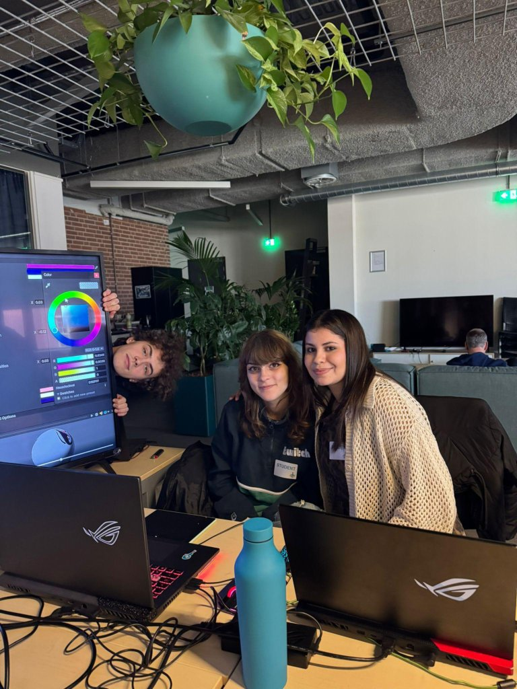
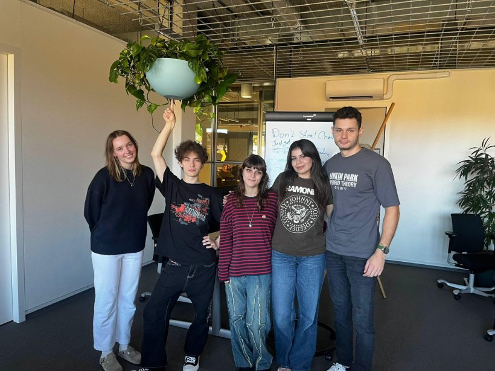
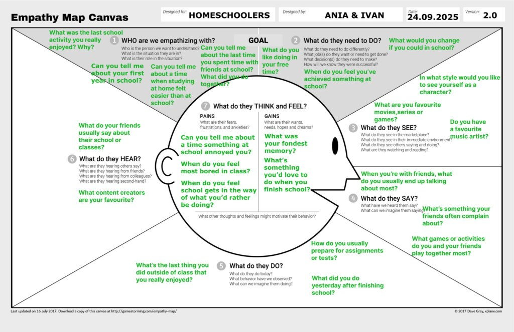
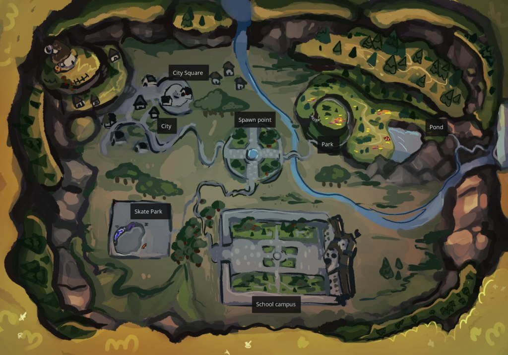
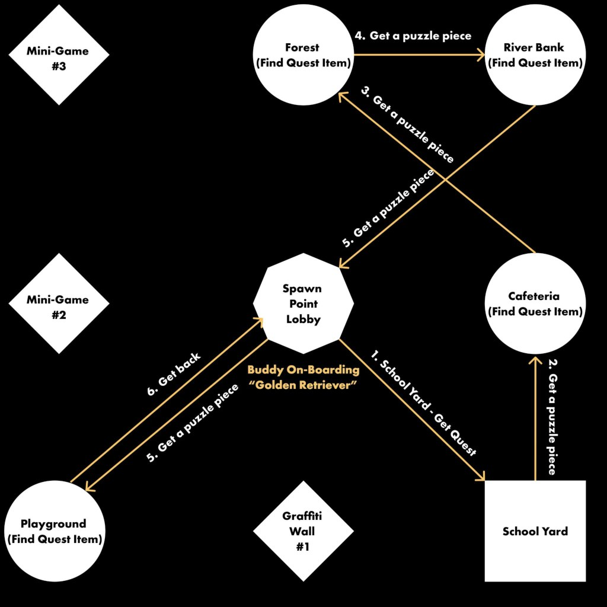
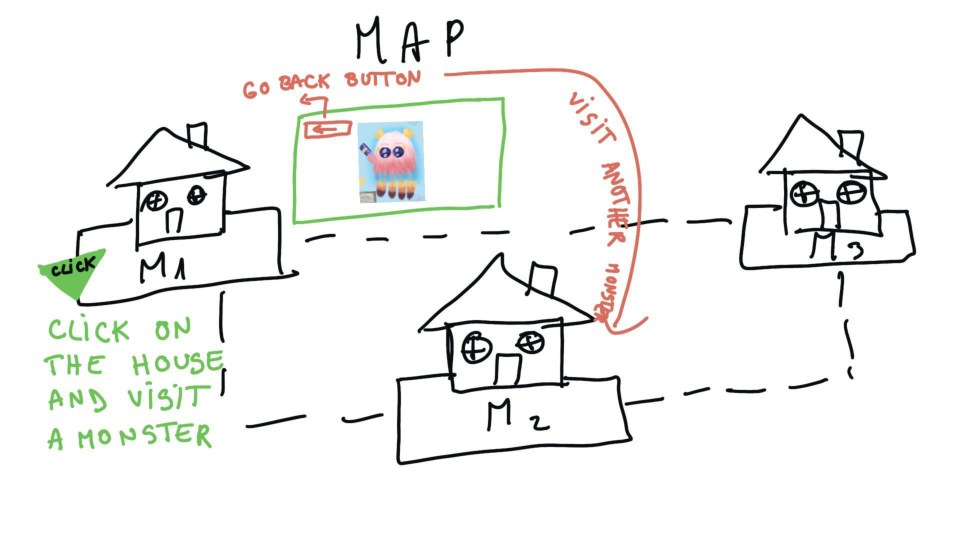
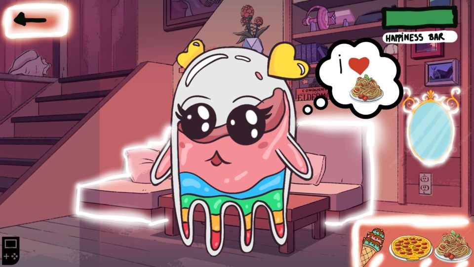
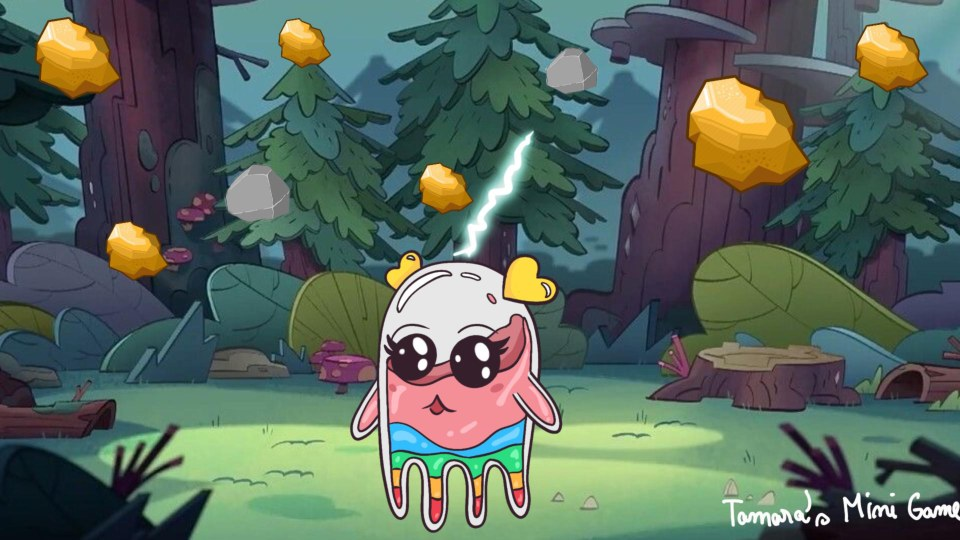

Graduation & Team Projects
Designing together
I believe the bigger the project, the more room there is for creativity. These are the ones I got to build with a team.
Graduation Project: SOTOG MVP
UX/UI Designer · September 2025 – January 2026
SOTOG is short for Stichting Speciaal Onderwijs Twente en Oost Gelderland, Dutch for "Foundation for Special Education Twente and Oost Gelderland."
Together with a team, I helped develop an MVP commissioned by the Director of Education & Support Services at SOTOG. The tool is built for homeschooled children, with the goal of making their transition back into a classroom setting smoother and less overwhelming.
It's a big, ongoing project. Our team built the foundation, and a company is taking it forward from there. Within the team, I was in charge of the UX/UI: structuring the flows, designing the interface, and making sure the experience felt supportive rather than clinical for the children using it.


Concept trailer
A short trailer Team Lambda put together to pitch the concept.
Research & testing
Before designing anything, we sat down with the kids we were actually building for. We ran four in-person testing sessions with homeschooled children to understand what school felt like from their side, then mapped what we learned onto an empathy map.

Level & map design
As part of the game-like structure, we designed the world the child would navigate: an illustrated map of the school grounds, and a flow diagram for "Buddy," the onboarding guide who introduces new players to each area.


Why it mattered: designing for a vulnerable, specific audience (children transitioning back into school after being homeschooled) meant every UX decision had to be handled with care, not just usability in mind.
More group projects
DrawLog
An application built for artists and designers to keep their sketches and ideas organized in one place. Three videos tell the story better than I can.
Unity walkthrough
Figma prototype walkthrough
Promotional video
Shot and edited by me, green screen included.
The Pandora File
An indie horror game I'm especially proud of, built around gyroscope controls: your phone doubles as your in-game inventory and a physical gyroscope, so you tilt and move it to actually use whatever you've picked up. You play as a man searching for shelter for the night who ends up locked inside a mad scientist's lab. Will he survive?
Monster Pets (working title)
On this one I was the sole designer, and even took on some of the rigging myself. We worked with elementary school kids who drew their own monsters, and we brought those drawings to life as virtual pets, Talking Tom style: you feed them, play with them, caress them, and bathe them.
Level design: the map
Click a house to visit that monster's room.

Level design: the pet's room

Mini-game concept

Rigging
Character in action
Cursor Hackathon 2026
A one-day hackathon where I teamed up with two women I'd just met on the spot, Christina Diephuis and Laura Karasova. In six hours, our team of three built a website using Cursor and the ElevenLabs API, designed to support students who can't afford to study at Unknown University.
In the video below I walk through the features, how we built the project within the hackathon time limit, and what we learned along the way.